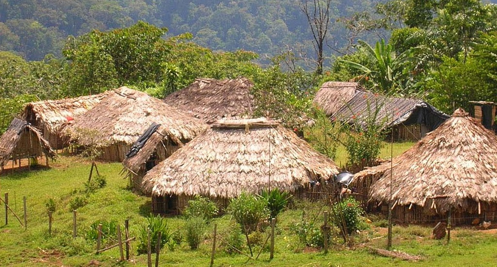

Have you ever wondered how it feels to be a stranger to your own country? This was Awa’s response when asked if he felt “at home” in Costa Rica. Awa is a member of the Bribri, an indigenous tribe native to Costa Rica’s Talamanca mountain range. The Bribri are an autochthonous group to Costa Rican mountain ranges, having established their territories long before the Spanish Conquista. Throughout the centuries, they have lost their ancestral land to development and modernization. Today, the Bribri tribe’s territory is just a small fraction of what it once was. Moreover, due to increased globalization and urbanization, they are facing an unprecedented crisis - the loss of identity and culture.
Awa’s village is neglected by the authorities, and they live in extreme poverty without much aid. The borders that define their native community, rather than being a guardian of their unique identities, ways of life, and culture, are instead used to subvert responsibility by the government by the guise of “autonomy”. These boundaries serve only to benefit the people in government - if any part of their land is home to precious resources or simply needed to expand domestic agriculture, the borders are suddenly quite fluid. Apparently, they are suddenly told that they are the same as all Costa Ricans and entitled to the benefits of development. According to Awa, this is almost always a lie. The Bribri rarely see the flow of money into their communities, and instead the profits flow directly to San Jose. And even if people like Awa want to work, due to the racial discrimination that natives face in the eyes of Costa Rican employers, they are passed on for these new jobs and unemployment remains a critical issue. On the other hand, when issues arise for the village, these borders are suddenly very firm, and the Bribri are once again considered an independent citizenry that the government respects their duty to be left autonomous.
No place to call home
Awa tells me he was unemployed, and like many other young people from his tribe he migrated out of his village to look for work and a livelihood. However, the playing field is not level for indigenous people in Costa Rica. Outside of his community he continues to face discrimination in the job market, and is only able to work odd jobs relying on physical labor that other Costa Ricans would rather not do. It was clear that this division that people have drawn between the Bribri and everyone else gave the justification of abuse and discrimination to people that on paper should be unified and living harmoniously in the same nation. At the same time, Awa clarifies that he does not place all the blame on the people outside his village, but there is no denying that his experience has been very discouraging. He painted a very grim picture for those searching for employment outside the tribe - either they are so abused and mistreated by the outsiders that they crawl back home, where they are ridiculed for their arrogance and lack of appreciation for the tribe, or if they are resilient enough to make it in the outside world, they are regarded as traitors that have forsaken our culture in exchange for colones. Colones were named after Christopher Columbus after all.
Therefore, people like Awa are subsequently shunned by their communities and “the only people that understand and can relate to them in this world”. Nonetheless, Awa states that this is to be expected:
“They are not entirely wrong, not in their discrimination towards people only hoping to live a better life, but in the loss of our culture and language. When we are so mistreated for our origins, it is only the natural step that we attempt to remove ourselves from our own culture and traditions so that we may better fit in with the new outside world. And because of the backlash that we face should we return home, many such as myself have resigned ourselves to living out the rest of my life outside of where I was born.”
In this way these insidious borders force those who may have developed skills or acquired useful resources outside of the tribe to be prevented from bringing them back in.
Awa made it clear that these borders between the tribe and the outside do little to help them - they are meant to contain the suffering and hardships inside, while preventing prosperity or fortune from coming in. Even then, he tells me he wishes to return home to his village one day.
